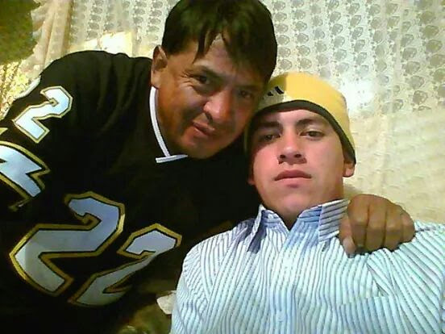

Cocoroco siempre en nuestros corazones
"Papito ya cinco años de tu partida, tus enseñanzas siguen guiando mi vida. Aunque el tiempo pasa, tu recuerdo vive intacto. Te extraño, papá, pero celebro tu legado y la fortuna de haberte tenido. Atte. Carlos Torres"

"Querido padre hoy 5 años de tu partida te seguimos recordando tal cual eres como un hombre valiente, fuerte,todo un guerrero sin desacanso entregado a sus hijos y familiares se que duele q no estés aquí pero sabemos q en cual quier parte que estés nos sigues cuidando y protegiendo te amamos mucho papá con todo el corazón."
"Chatito mi padre y madre ya son 5 años desde tu partida y solo me queda decirte que estoy bien que la vida no es nada fácil después de todo pero que gracias a tu valentía y coraje con el que me criaste seguiré dando la talla y siendo el mejor donde quiera que vaya sigo enseñando todo lo que aprendí de ti en cada gesto cada palabra y cada acción con la que te recuerdo aunque tu partida aun duele no ha impedido que sigamos adelante y que hagamos las cosas bien como hubieses querido te amo mucho papito lindo logre todo lo que te prometí espero te sientas orgulloso del TOPITO."